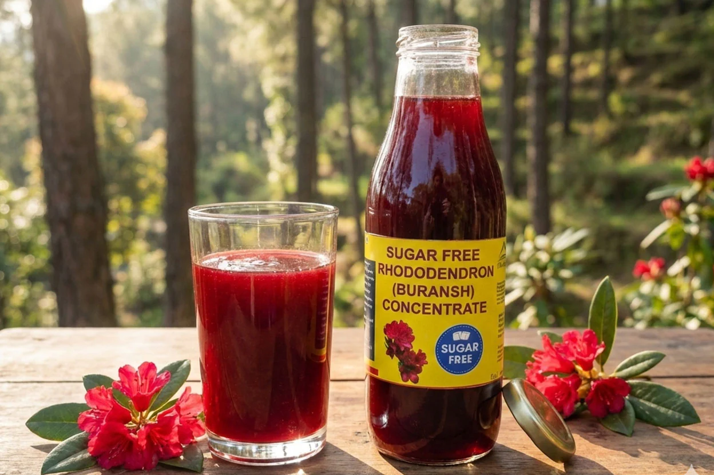

"Every sip feels like the mountains."
Ingredients
- Buransh flowers
- Water
- Sugar
Steps & Emotions
- Collect flowers - nature's gift
- Wash - purity
- Boil - essence releases
- Add sugar - sweetness grows
- Cool down - patience
- Strain - clarity
- Pour - beauty appears
- Drink - joy fills
Time: 20 mins | Difficulty: Medium